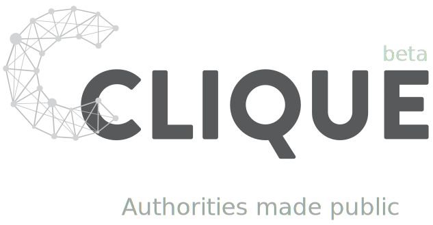

Explore the political influence network in the Netherlands. Dig in the Transparant Nederland data set. Start your exploration here by typing the name of a politician. Type first and last name, e.g. Femke Halsema, Hans Dijkstal, Wim Kok of Anne Flierman
